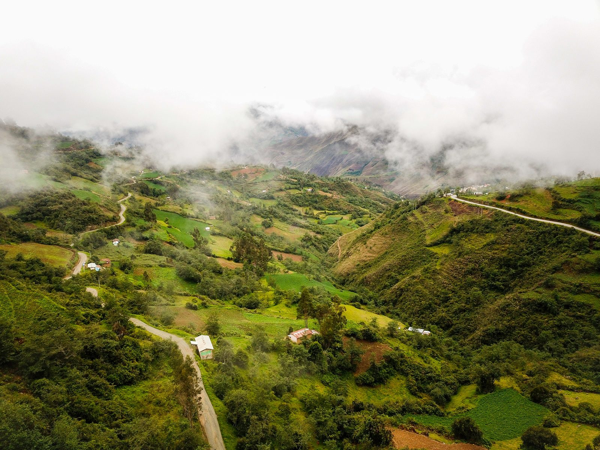

Cinco años de cambios en el sistema alimentario: los miramos juntos
Celebrando los cambios que sembramos juntos. Aquí están la agenda en vivo, las herramientas de cada jornada y la dinámica por mesas.
¿Cómo usar este portal?
Mire la agenda
La agenda indica en vivo qué toca ahora, quién conduce y con qué herramienta.
Abra la herramienta
Cada sesión tiene su herramienta: se abre aquí mismo y guarda lo escrito en este equipo.
Participe con su mesa
Ubíquese en la mesa de su color, comparta sus ideas en tarjetas y aporte al muro de cambios.
Recorrido 3D por el taller
Una maqueta del valle de Huánuco con una estación por cada parte del taller. Gírela con el dedo o el ratón, toque una estación o inicie el recorrido guiado.
La ruta de los dos días
Lo que el programa se propuso: seis resultados
Los cambios que identifiquemos se vinculan con estos resultados. El análisis usa cuatro criterios: impacto, sostenibilidad, eficacia y género.
«Esto no es un examen al programa ni a las personas: es una conversación para aprender. Lo que no funcionó vale tanto como lo que sí».
Programa de las dos jornadas
Toque una sesión para ver el objetivo, el paso a paso y las herramientas. El botón del cronómetro proyecta el tiempo de la sesión.
Las herramientas del taller
Herramientas de facilitación (H1–H23) y de documentación (D1–D5). Cada herramienta se presenta en pantalla completa para proyectarla en la sala; use las flechas ← → para pasar de una a otra y la tecla F para ocupar toda la pantalla. Las marcadas como «Interactiva» guardan lo escrito en este equipo.